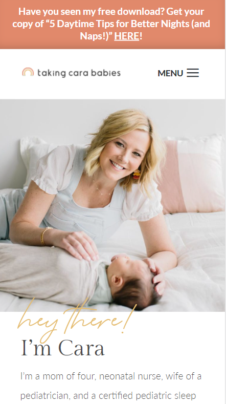

Repetition
Brighten Made
Brighten Made is a website design business. They use a lot of repetition in their website. As you can see they use the same font in the logo as well as the text that is on the website. They also use abstract shapes in the background you can see these curved elements repeated in this screenshot.
Contrast
Richard Wong Photography

Richard Wong is a nature photographer. He uses contrast in his website design to help his pictures pop. His photos are bright and stunning so the black background for the site creates a great visual effect using contrast.
Visual Hierarchy
Taking Cara Babies
Taking Cara Babies is a sleep training program developed by Cara (and it works!). On her website you can see that she is using visual hierarchy. The image is the biggest thing in this screenshot, and it's focused on what her program is about, which is helping babies sleep. The "hey there!" text isn't super important, which is why having it in a lighter font is effective. Her name is the second biggest thing on the page, because she's introducing herself and who she is.